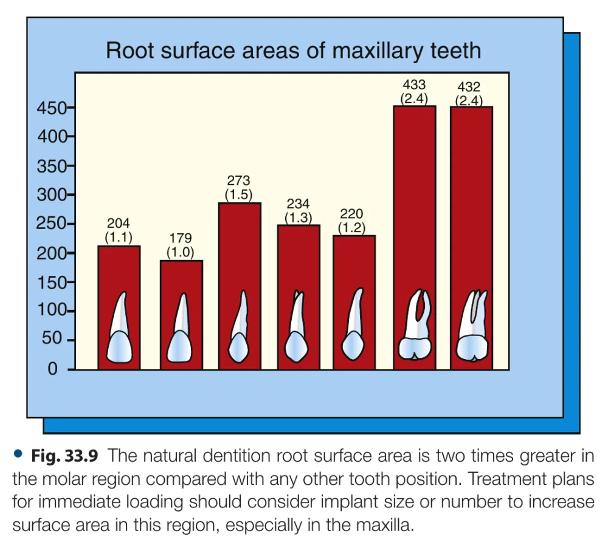

نسخه استخراجشده؛ ترجمه یا تأیید علمی انجام نشده است. وضعیت: captured
از درس ۳ میدانی سطح عملکردی، مخرج کسر تنش است. حالا چهار راه افزایش آن:
راه یکم — تعداد ایمپلنت.
حرف مستقیم این است: بهجای سه تا پنج ایمپلنت برای پشتیبانی یک پروتز ثابت، وقتی بارگذاری فوری برنامهریزی شده، استفاده از ایمپلنتهای بیشتر عاقلانهتر است. و شواهد هم همین را میگویند: گزارشهایی با کمترین درصد بقا، به کمترین تعداد ایمپلنت بارگذاریشده مربوطاند. در مقابل، در مطالعات متعدد که ۱۰ تا ۱۳ ایمپلنت در هر قوس قرار داده و اسپلینت شدهاند، بقا بیش از ۹۷ درصد بوده است.
و سه سازوکار جداگانه در کار است — نه فقط «سطح بیشتر»:
و یک قاعدهی قوس: ماگزیلا معمولاً به ایمپلنتهای بیشتری نسبت به مندیبل نیاز دارد — برای جبران استخوان کمتراکمتر و جهتهای بیشتر نیرو که اغلب در قوس ماگزیلا دیده میشود.
راه دوم — اندازهی ایمپلنت.
طول: هر ۳ میلیمتر افزایش طول میتواند سطح پشتیبان را بیش از ۲۰ درصد بهبود دهد.
اما این سود بلافاصله محدود میشود و این یکی از ظریفترین نکات این بخش است: سود طول در رابط استخوان کرستال نیست، بلکه در ثبات اولیهی رابط است. بیشتر تنشها در ناحیهی کرستال متمرکزند، پس طول بیشتر کار چندانی برای کاهش تنش ناحیهی ترانساُستئال نمیکند. بنابراین طول روش مؤثری برای کاهش تنش نیست — چون مسئله را در ناحیهای که سطح عملکردی اهمیت دارد حل نمیکند.
پس چرا در بارگذاری فوری طول باز هم مهم میشود؟ چون ایمپلنت پیش از شکلگیری رابط هیستولوژیک بار میگیرد. طول برای کاربردهای بارگذاری فوری مرتبطتر است، بهویژه در انواع نرمتر استخوان. و طول اضافی میتواند اجازه دهد ایمپلنت پلیت کورتیکال مقابل را درگیر کند که ثبات اولیه را بیشتر میکند.
عرض: سطح عملکردی هر سیستم عمدتاً به عرض و طراحی ایمپلنت مربوط است. ایمپلنتهای روتفرم پهنتر (با طراحی مشابه) سطح تماس بیشتری میدهند. و چون کرست ریج جایی است که تنشهای اکلوزالی بیشتریناند، نتیجه این است:
«عرض از طول ایمپلنت مهمتر است — پس از آنکه حداقل طول برای فیکساسیون اولیه بهدست آمد.»
و پیامد بالینیاش: اگمنتاسیون عرض ممکن است برای افزایش قطر ایمپلنت اندیکاسیون یابد، وقتی نیروها بیشترند — مثل پارافانکشن متوسط تا شدید. و در ناحیهی مولر، جایی که سطح ریشهی دندان طبیعی دو برابر بقیهی دنتیشن است، قطر ایمپلنت اغلب افزایش مییابد. و اگر قطر بزرگتر بدون جراحی اگمنتاسیون ممکن نبود؟ ایمپلنتهای بیشتر — مثلاً دو تا برای هر مولر — که آن هم راهی برای دو برابر کردن سطح کلی در ناحیهی خلفی است.
راه سوم و چهارم — طراحی بدنه و هندسهی رزوه.
منطقش روشن است: طراحی بدنه در بارگذاری فوری باید اختصاصیتر باشد، چون استخوان فرصت نداشته در فرورفتگیها و آندرکاتهای طراحی رشد کند یا به شرایط سطح بچسبد، پیش از آنکه بار اکلوزالی وارد شود.
و برای ایمپلنت رزوهدار: استخوان از روز اول در عمق رزوهها حاضر است. پس سطح عملکردی در فرمت بارگذاری فوری بیشتر است.
و رابطهاش با نرخ ریمادلینگ: یک ایمپلنت ماکروسفر با سطح کاهشیافته میتواند دو برابر نرخ ریمادلینگ یک طراحی رزوهدار معمول را داشته باشد.
در مقابل، طراحی رزوهی مربعی با رزوههای عمیقتر و پرشمارتر، کاهش دهبرابری نرخ ریمادلینگ در شرایط بارگذاری مشابه گزارش شده و به حدود ۵۰ درصد در سال میرسد. و قاعده: هرچه نرخ ریمادلینگ بالاتر، رابط استخوانی ضعیفتر. (دندان طبیعی نرخ ۴۰ درصد در سال دارد که لاملار را در رابط حفظ میکند.)
و آزمایشی که این را مستقیم سنجید: ۷۲ ایمپلنت در ۱۲ خرگوش، تست ریورستورک پس از ۱۲ هفته بدون بار. یکسوم رزوهی V، یکسوم باتِرِس معکوس، یکسوم رزوهی مربعی — با تعداد و عمق رزوه و نیز عرض و طول یکسان. نتیجه: V و باترس معکوس مقادیر مشابهی دادند؛ رزوهی مربعی بهطور آماری معنادار در هر دو شاخص (ریورستورک و BIC) بالاتر بود.
و چرا؟ برای طراحی رزوهی V، نیروی برشی ده برابر بیشتری به استخوان وارد میشود در مقایسه با شکل مربعی. و استخوان در برابر فشار قویترین و در برابر برش ضعیفترین است. نیروهای فشاری ریزکرنش را نسبت به نیروهای برشی کاهش میدهند.
اما این استدلال نقد هم دارد — و این را باید بدانی: چند کارآزمایی بالینی که بارگذاری فوری را با طراحیهای مختلف رزوه و بدنههای تیپر در بیمار کاملاً بیدندان مقایسه کردهاند، صرفنظر از طراحی ایمپلنت، نرخ موفقیت بالایی نشان دادهاند. نتیجه: «شکل کلی و هندسهی رزوه ظاهراً ممکن است مهمترین جنبهی بقای بارگذاری اکلوزالی فوری نباشند. تعداد ایمپلنت، موقعیت ایمپلنت و عوامل بیمار به احتمال زیاد اجزای مرتبطتری از موفقیتاند.»

حالا صورت کسر. نیرو را میتوان بر پایهی بزرگی، مدت، جهت و نوع ارزیابی کرد و در حالت ایدهآل همهی اینها باید کاهش یابند.
عامل بیمار — و سنگینترین عدد این یونیت.
پارافانکشن مانند برایکسیسم و کلنچینگ عوامل نیروی چشمگیریاند، چون هر سه متغیر را همزمان بدتر میکنند: بزرگی نیرو بیشتر میشود، مدت نیرو بیشتر میشود، و جهت نیرو افقیتر از محوری میشود — یعنی با مؤلفهی برشی بزرگتر. و از درس ۳ میدانی استخوان در برابر برش ضعیفترین است.
و عدد: در یک گزارش، ۷۵ درصد تمام شکستها در بارگذاری اکلوزالی فوری، در بیماران با برایکسیسم رخ داده است.
و دادهی پشت این عدد: ۱۳۰ ایمپلنت در ۱۰ بیمار — ۴۰ ایمپلنت بارگذاری فوری و ۹۰ ایمپلنت با رویکرد سنتی دومرحلهای. بقا: ۸۰ درصد برای بارگذاری فوری در برابر ۹۶ درصد برای پروتکل سنتی.
و تأیید دوم: بررسی دیگری بارگذاری فوری را در ۸ بیمار بیدندان سنجید که ۴ نفرشان برایکسیسم داشتند. موفقیت کلی ۸۷ درصد در ماگزیلا و ۹۷ درصد در مندیبل بود — و پنج تا از هفت شکست ایمپلنت در گروه برایکسیسم بودند.
و یک زنجیرهی شکست هم هست که فقط عدد بقا نشانش نمیدهد: بارهای پارافانکشنال ریسک شل شدن پیچ اباتمنت، جداشدن پروتز، یا شکستن ترمیم موقت را هم بالا میبرند. و اگر هر یک از این عوارض رخ دهد، ایمپلنتهای باقیماندهای که هنوز بار میگیرند بیشتر در معرض شکستاند — یعنی یک شکست مکانیکی کوچک، به یک شکست بیولوژیک زنجیرهای تبدیل میشود.
جهت بار اکلوزالی.
جهت بار میتواند بر نرخ ریمادلینگ اثر بگذارد. بار محوری به بدنهی ایمپلنت، استخوان لاملار بیشتری را حفظ میکند و نرخ ریمادلینگ پایینتری نسبت به بار آفست دارد.
در یک مطالعهی حیوانی، در رابط ایمپلنتهای با بار آفست استئوکلاست و سلولهای التهابی دیده شد، در حالی که در همان حیوان، اطراف ایمپلنتهای با بار محوری استخوان لاملار و نرخ ریمادلینگ پایینتر بود.
و نتیجهگیری بالینی: «بنابراین پزشک باید کانتیلورهای خلفی را در ترمیم موقت بارگذاری فوری حذف کند، چون آنها اثرات مخرب جهت نیرو را تشدید میکنند.» — به یاد بیاور که در درس ۲ گفتیم A-P spread بزرگ بهتنهایی مجوز کانتیلور نیست؛ اینجا دلیلش را میبینی.
موقعیت ایمپلنت.
موقعیت ایمپلنت اغلب بهاندازهی تعداد ایمپلنت مهم است. یک مثال: در دو ایمپلنتی که سه دندان را پشتیبانی میکنند، حذف کانتیلور توصیه میشود — نه اینکه ایمپلنتها را کنار هم بگذاری و یک کانتیلور بسازی.
و اصل اسپلینت متقاطع قوس: اسپلینت متقاطعی که یک قوس میسازد، طراحی مؤثری برای کاهش تنش به کل سیستم پشتیبان است. پس مفهوم موقعیت اسپلینتشدهی قوسی برای پروتز موقت بارگذاری فوری در بیماران کاملاً بیدندان مزیت دارد.
و پیش از ماگزیلا، قاعدهی مندیبل:
موقعیت ایمپلنت یکی از مهمترین عوامل بارگذاری فوری در بیماران کاملاً بیدندان است. و مندیبل را میتوان به سه بخش پیرامون قوس تقسیم کرد: ناحیهی کانین تا کانین و دو بخش خلفی دوطرفه.
و چند گزارش بالینی، بارگذاری فوری در مندیبل را تنها با سه ایمپلنت بررسی کردهاند — به شرطی که ایمپلنتها در میدلاین و هر ناحیهی خلفی قرار گرفته باشند. یعنی همان اصل «یکی در هر بخش» که در ماگزیلا با پنج بخش اجرا میشود، در مندیبل با سه بخش اجرا میشود. مقایسهی پنج در برابر سه، تفاوت دو قوس را در یک عدد خلاصه میکند.
و قاعدهی پنج بخش ماگزیلا:
ماگزیلا به پشتیبانی بیشتری نسبت به مندیبل نیاز دارد، چون استخوان کمتراکمتر است و جهت نیرو در تمام حرکات اکسنتریک بیرون از قوس است. ماگزیلا را معمولاً به پنج بخش تقسیم میکنند، بسته به شدت شرایط نیرو و شکل قوس:
و قاعده: دستکم یک ایمپلنت باید در هر بخش ماگزیلا قرار گیرد و در فرایند بارگذاری فوری به بقیه اسپلینت شود.
و نکتهای دربارهی مندیبل که یک نگرانی رایج را حل میکند: نگرانیهایی دربارهی اسپلینت متقاطع در مندیبل مطرح شده، بهدلیل خمش و تورشن مندیبل در دیستالِ فورامن منتال. اما گزارشهای بالینی نشان میدهند آکریلیک بهکاررفته در پروتز موقت بهقدر کافی انعطافپذیر است که این نگرانیها را رفع کند. با این حال، پروتز نهایی باید در دستکم دو بخش مستقل ساخته شود، وقتی ایمپلنتها در هر دو موقعیت مولر خلفی قرار گرفتهاند.
و یک هشدار دربارهی گرافت که تصمیم توالی درمان را عوض میکند: گرافت استخوان برای پیشبینیپذیری به خونرسانی کافی و نبود میکروموومنت نیاز دارد. اما استخوان در حال تشکیل، استخوان بافته است و بیشتر در معرض اورلود. گرافت در ناحیهی بدنهی ایمپلنت میتواند به فیکساسیون کمتر و BIC اولیهی پایینتر بینجامد. و اگمنتاسیون وقتی پیشبینیپذیرتر است که بافت نرم کاملاً گرافت (و ممبران) را بپوشاند — که با بارگذاری فوری در تضاد است. نتیجه: ایمپلنتهای بارگذاریشدهی فوری باید در حجم استخوان موجودِ کافی قرار گیرند؛ اگر حجم کافی نیست، گرافت پیش از قرار دادن ایمپلنت و بارگذاری فوری پیشنهاد میشود — نه همزمان با آن.